Analyze everything
Contents
8. Analyze everything#
This notebook demonstrates how to run a complete STRESS analysis in a few lines of code and produce all relevant output graphs.
import napari_stress
import napari
import numpy as np
from napari_stress import reconstruction, approximation, measurements, frame_by_frame, TimelapseConverter
import napari_process_points_and_surfaces as nppas
import vedo
from scipy import stats
import pandas as pd
import seaborn as sns
import matplotlib.pyplot as plt
import matplotlib as mpl
8.1. Config#
For plotting:
save_figures_to_dir = True
colormap = 'seismic'
8.1.1. Data dimensions#
You need to set a few parameters pertaining to your data:
voxel_size_x = 1.0 # microns
voxel_size_y = 1.0 # microns
voxel_size_z = 1.93 # microns
target_voxel_size = 1.0 # microns
8.1.2. Droplet reconstruction parameters#
All of the parameters are explained in more detail here.
n_smoothing_iterations = 10
n_points_first_guess = 256
n_tracing_iterations = 1
resampling_length = 1
fit_type = 'fancy' # can be 'fancy' or 'quick'
edge_type = 'interior' # can be 'interior' or 'surface'
trace_length = 10
trace_sampling_distance = 0.5
Hint: Not sure whether the code is running probably? To show a progress bar for the processing of each timeframe, set the verbose parameter to True:
verbose = False
8.1.3. Stress analysis parameters#
All of the used parameters are explained in more detail here.
max_degree = 10 # spherical harmonics degree
n_quadrature_points = 434 # number of quadrature points to measure on (maximum is 5180)
gamma = 6.0 # interfacial tension of droplet
9. Analysis#
viewer = napari.Viewer(ndisplay=3)
WARNING: QWindowsWindow::setGeometry: Unable to set geometry 5748x4581+960+312 (frame: 5780x4669+944+240) on QWidgetWindow/"_QtMainWindowClassWindow" on "\\.\DISPLAY1". Resulting geometry: 3844x2108+960+312 (frame: 3876x2196+944+240) margins: 16, 72, 16, 16 minimum size: 612x553 MINMAXINFO maxSize=0,0 maxpos=0,0 mintrack=1868,1747 maxtrack=0,0)
11-Nov-22 20:52:08 - vispy - WARNING - QWindowsWindow::setGeometry: Unable to set geometry 5748x4581+960+312 (frame: 5780x4669+944+240) on QWidgetWindow/"_QtMainWindowClassWindow" on "\\.\DISPLAY1". Resulting geometry: 3844x2108+960+312 (frame: 3876x2196+944+240) margins: 16, 72, 16, 16 minimum size: 612x553 MINMAXINFO maxSize=0,0 maxpos=0,0 mintrack=1868,1747 maxtrack=0,0)
example_data = napari_stress.get_droplet_4d()[0][0]
example_data.shape
(21, 16, 30, 31)
n_frames = example_data.shape[0]
viewer.add_image(example_data)
<Image layer 'example_data' at 0x17508243af0>
results_reconstruction = reconstruction.reconstruct_droplet(example_data,
voxelsize=np.asarray([voxel_size_z, voxel_size_y, voxel_size_x]),
target_voxelsize=target_voxel_size,
n_smoothing_iterations=n_smoothing_iterations,
n_points=n_points_first_guess,
n_tracing_iterations=n_tracing_iterations,
resampling_length=resampling_length,
fit_type=fit_type,
edge_type=edge_type,
trace_length=trace_length,
sampling_distance=trace_sampling_distance,
verbose=verbose
)
Jupyter environment detected. Enabling Open3D WebVisualizer.
[Open3D INFO] WebRTC GUI backend enabled.
[Open3D INFO] WebRTCWindowSystem: HTTP handshake server disabled.
for res in results_reconstruction:
if res[2] == 'image':
viewer.add_image(res[0], **res[1])
elif res[2] == 'points':
viewer.add_points(res[0], **res[1])
elif res[2] == 'vectors':
viewer.add_vectors(res[0], **res[1])
refined_points = results_reconstruction[3]
We need the refined points to continue:
results_stress_analysis = measurements.comprehensive_analysis(refined_points[0],
max_degree=max_degree,
n_quadrature_points=n_quadrature_points,
gamma=gamma,
verbose=verbose)
for res in results_stress_analysis:
if res[2] == 'points':
viewer.add_points(res[0], **res[1])
if res[2] == 'vectors':
viewer.add_vectors(res[0], **res[1])
10. Visualization#
mpl.style.use('default')
for res in results_stress_analysis:
print(res[1]['name'])
Result of fit spherical harmonics (deg = 10
Result of expand points on ellipsoid
Result of least squares ellipsoid
Result of lebedev quadrature on ellipsoid
Result of lebedev quadrature (droplet)
Extrema total stress
Extrema cell stress
Total stress: Geodesics maxima -> nearest minima
Total stress: Geodesics minima -> nearest maxima
Cell stress: Geodesics maxima -> nearest minima
Cell stress: Geodesics minima -> nearest maxima
stress_autocorrelations
error_df = pd.DataFrame(results_reconstruction[3][1]['features'])
error_df
| center | amplitude | slope | offset | center_err | amplitude_err | slope_err | idx_of_border | |
|---|---|---|---|---|---|---|---|---|
| 0 | 10.171750 | 0.621403 | 0.858346 | -0.001128 | 0.062860 | 0.007585 | 0.040815 | 10.171750 |
| 1 | 10.506931 | 0.696685 | 1.182345 | 0.001735 | 0.038347 | 0.005799 | 0.046639 | 10.506931 |
| 2 | 10.356692 | 0.677533 | 1.253369 | 0.002672 | 0.038270 | 0.005743 | 0.052261 | 10.356692 |
| 3 | 10.375868 | 0.631057 | 0.881399 | -0.000860 | 0.043904 | 0.005436 | 0.030001 | 10.375868 |
| 4 | 10.397514 | 0.725073 | 1.207843 | 0.003217 | 0.051260 | 0.008120 | 0.065043 | 10.397514 |
| ... | ... | ... | ... | ... | ... | ... | ... | ... |
| 8208 | 10.140012 | 0.641018 | 1.246144 | 0.003294 | 0.044055 | 0.006227 | 0.059544 | 10.140012 |
| 8209 | 10.845609 | 0.646760 | 1.199964 | 0.005659 | 0.050979 | 0.007244 | 0.063883 | 10.845609 |
| 8210 | 10.651830 | 0.703488 | 1.135992 | 0.009145 | 0.072360 | 0.010914 | 0.081316 | 10.651830 |
| 8211 | 10.002006 | 0.617621 | 1.176941 | 0.003622 | 0.042486 | 0.005653 | 0.051259 | 10.002006 |
| 8212 | 10.853314 | 0.664764 | 1.127880 | 0.006359 | 0.051619 | 0.007369 | 0.057200 | 10.853314 |
8213 rows × 8 columns
fig, ax = plt.subplots()
sns.histplot(data=error_df, x='center_err', ax=ax)
ax.set_xlabel('Position error [µm]', fontsize=16)
ax.set_ylabel('Counts [#]', fontsize=16)
ax.set_xticklabels(ax.get_xticklabels(), fontsize=16)
ax.set_yticklabels(ax.get_yticklabels(), fontsize=16)
fig.tight_layout()
fig.savefig(r'C:\Users\johamuel\ownCloud\Documents\Reisen\2211_crick_symposium\flash_talk\imgs\trace_error')
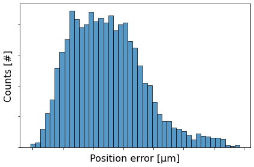
fig, ax = plt.subplots()
sns.histplot(data=error_df, x='amplitude_err', ax=ax)
ax.set_xlabel('Amplitude error [a.u.]', fontsize=14)
ax.set_ylabel('Counts [#]', fontsize=14)
ax.set_xticklabels(ax.get_xticklabels(), fontsize=14)
ax.set_yticklabels(ax.get_yticklabels(), fontsize=14)
fig.tight_layout()
fig.savefig(r'C:\Users\johamuel\ownCloud\Documents\Reisen\2211_crick_symposium\flash_talk\imgs\trace_error1.png')
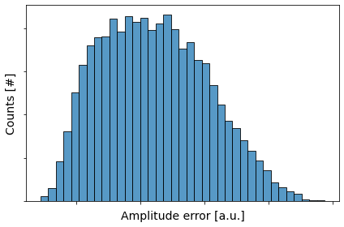
fig, ax = plt.subplots()
sns.histplot(data=error_df, x='slope_err', ax=ax)
ax.set_xlabel('Slope error [µm$^{-1}$]', fontsize=14)
ax.set_ylabel('Counts [#]', fontsize=14)
ax.set_xticklabels(ax.get_xticklabels(), fontsize=14)
ax.set_yticklabels(ax.get_yticklabels(), fontsize=14)
fig.tight_layout()
fig.savefig(r'C:\Users\johamuel\ownCloud\Documents\Reisen\2211_crick_symposium\flash_talk\imgs\trace_error2.png')
fig, ax = plt.subplots()
sns.histplot(data=error_df, x='center', ax=ax)
ax.set_xlabel('Center', fontsize=14)
ax.set_ylabel('Counts [#]', fontsize=14)
ax.set_xticklabels(ax.get_xticklabels(), fontsize=14)
ax.set_yticklabels(ax.get_yticklabels(), fontsize=14)
fig.tight_layout()
fig.savefig(r'C:\Users\johamuel\ownCloud\Documents\Reisen\2211_crick_symposium\flash_talk\imgs\trace_error3.png')
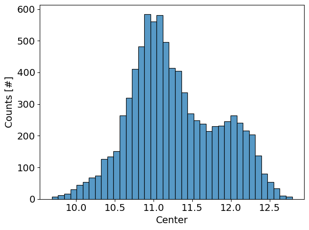
10.1. Spherical harmonics#
10.1.1. Fit residue#
spherical_harmonics_data = results_stress_analysis[0]
df = pd.DataFrame(spherical_harmonics_data[1]['features'])
df['frame'] = spherical_harmonics_data[0][:, 0].astype(int)
fig, axes = plt.subplots(ncols=2, figsize=(10,5))
sns.kdeplot(data=df, x='fit_residue', hue='frame', ax=axes[0], palette=colormap, alpha=0.7)
sns.lineplot(data=df, x='frame', y='fit_residue', ci=95, ax=axes[1], legend=True, label='Average fit residue (95% CI)', marker='o')
for ax in axes:
ax.grid(which='major', linestyle='--', color='gray', alpha=0.7)
fig.tight_layout()
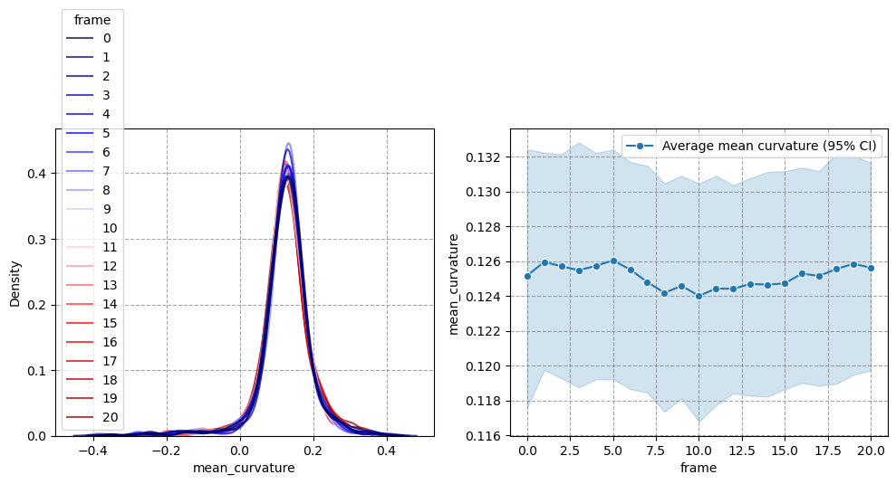
10.1.2. Fit quality#
lebedev_quadrature_data = results_stress_analysis[4]
df = pd.DataFrame(lebedev_quadrature_data[1]['metadata'])
df['frame'] = np.arange(n_frames).astype(int)
fig, axes = plt.subplots(ncols=2, figsize=(10,5))
sns.lineplot(data=df, x='frame', y='Gauss_Bonnet_relative_error', legend=True, label='Relative error', marker='o', ax=axes[0])
sns.lineplot(data=df, x='frame', y='Gauss_Bonnet_error', legend=True, label='Absolute error', marker='o', ax=axes[1])
for ax in axes:
ax.grid(which='major', linestyle='--', color='gray', alpha=0.7)
fig.tight_layout()
10.2. Curvature#
mean_curvature_data = results_stress_analysis[4]
df = pd.DataFrame(mean_curvature_data[1]['features'])
df['frame'] = mean_curvature_data[0][:, 0].astype(int)
fig, axes = plt.subplots(ncols=2, figsize=(10,5))
sns.kdeplot(data=df, x='mean_curvature', hue='frame', ax=axes[0], palette=colormap, alpha=0.7)
sns.lineplot(data=df, x='frame', y='mean_curvature', ci=95, ax=axes[1], legend=True, label='Average mean curvature (95% CI)', marker='o')
for ax in axes:
ax.grid(which='major', linestyle='--', color='gray', alpha=0.7)
fig.tight_layout()

10.2.1. Total stress#
alpha=0.05
total_anisotropic_stress_data = results_stress_analysis[4]
df_total_stress = pd.DataFrame(total_anisotropic_stress_data[1]['features'])
df_total_stress['frame'] = total_anisotropic_stress_data[0][:, 0]
total_stress_anisotropy = []
for t in range(n_frames):
subset_t = df_total_stress[df_total_stress['frame']==t]['anisotropic_stress']
hist_data = np.histogram(subset_t, bins='auto', density=True)
hist_dist = stats.rv_histogram(hist_data)
smallest_excluded_value = hist_dist.ppf(alpha)
largest_excluded_value = hist_dist.ppf(1. - alpha)
total_stress_anisotropy.append(largest_excluded_value - smallest_excluded_value)
df_over_time = pd.DataFrame(total_stress_anisotropy, columns=['total_stress_anisotropy'])
df_over_time['frame'] = np.arange(n_frames).astype(int)
fig, axes = plt.subplots(ncols=2, nrows=2, figsize=(13,13))
axes = axes.flatten()
_ax2 = axes[2].twinx()
sns.kdeplot(data=df_total_stress, x='anisotropic_stress', hue='frame', ax=axes[0], palette=colormap, alpha=0.7)
sns.lineplot(data=df_total_stress, x='frame', y='anisotropic_stress', ci=95, ax=axes[1], legend=True, label='Average total stress (95% CI)', marker='o')
sns.histplot(data=df_total_stress, x='anisotropic_stress', ax=axes[2], label='Histogram (all frames combined)', legend=True)
sns.kdeplot(data=df_total_stress, x='anisotropic_stress', ax=_ax2, cumulative=True, label='Cumulative density function (all frames combined)', fill=False, color='black')
sns.lineplot(data=df_over_time, x='frame', y = 'total_stress_anisotropy', label='Total stress ($\sigma^A_M - \sigma^A_N$)', marker='o', ax=axes[3])
for ax in axes:
ax.grid(which='major', linestyle='--', color='gray', alpha=0.7)
fig.tight_layout()
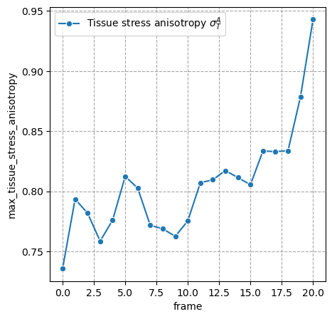
10.2.2. Cell-scale stress#
alpha=0.05
total_anisotropic_stress_data = results_stress_analysis[4]
df_cell_stress = pd.DataFrame(total_anisotropic_stress_data[1]['features'])
df_cell_stress['frame'] = total_anisotropic_stress_data[0][:, 0]
cell_stress_anisotropy = []
for t in range(n_frames):
subset_t = df_cell_stress[df_cell_stress['frame']==t]['anisotropic_stress_cell']
hist_data = np.histogram(subset_t, bins='auto', density=True)
hist_dist = stats.rv_histogram(hist_data)
smallest_excluded_value = hist_dist.ppf(alpha)
largest_excluded_value = hist_dist.ppf(1. - alpha)
cell_stress_anisotropy.append(largest_excluded_value - smallest_excluded_value)
df_over_time['cell_stress_anisotropy'] = cell_stress_anisotropy
fig, axes = plt.subplots(ncols=2, nrows=2, figsize=(13,13))
axes = axes.flatten()
_ax2 = axes[2].twinx()
sns.kdeplot(data=df_cell_stress, x='anisotropic_stress_cell', hue='frame', ax=axes[0], palette=colormap, alpha=0.7)
sns.lineplot(data=df_cell_stress, x='frame', y='anisotropic_stress_cell', ci=95, ax=axes[1], legend=True, label='Average total stress (95% CI)', marker='o')
sns.histplot(data=df_cell_stress, x='anisotropic_stress_cell', ax=axes[2], label='Histogram (all frames combined)', legend=True)
sns.kdeplot(data=df_cell_stress, x='anisotropic_stress_cell', ax=_ax2, cumulative=True, label='Cumulative density function (all frames combined)', fill=False, color='black')
sns.lineplot(data=df_over_time, x='frame', y = 'cell_stress_anisotropy', label='Cell stress ($\sigma^A_{C,M} - \sigma^A_{C,N}$)', marker='o', ax=axes[3])
for ax in axes:
ax.grid(which='major', linestyle='--', color='gray', alpha=0.7)
fig.tight_layout()
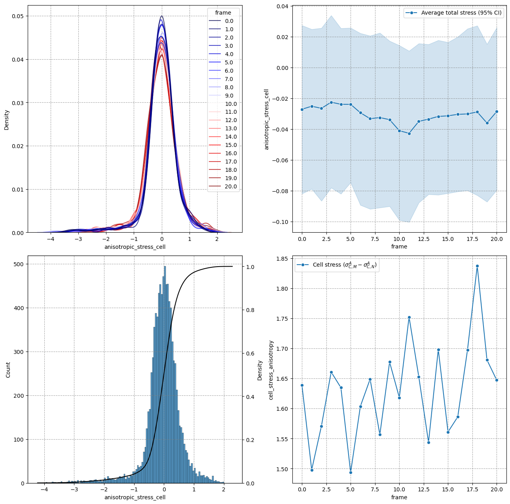
10.3. Tissue-scale stresses#
tissue_anisotropic_stress_data = results_stress_analysis[3]
df_tissue_stress = pd.DataFrame(tissue_anisotropic_stress_data[1]['features'])
df_tissue_stress['frame'] = total_anisotropic_stress_data[0][:, 0]
df_over_time['max_tissue_stress_anisotropy'] = tissue_anisotropic_stress_data[1]['metadata']['max_issue_stress_anisotropy']
fig, axes = plt.subplots(ncols=2, figsize=(14,7))
axes = axes.flatten()
sns.kdeplot(data=df_tissue_stress, x='anisotropic_stress_tissue', hue='frame', ax=axes[0], palette=colormap, alpha=0.7)
sns.lineplot(data=df_over_time, x='frame', y = 'max_tissue_stress_anisotropy',
label='Tissue stress anisotropy $\sigma^A_T$', marker='o', ax=axes[1])
for ax in axes:
ax.grid(which='major', linestyle='--', color='gray', alpha=0.7)
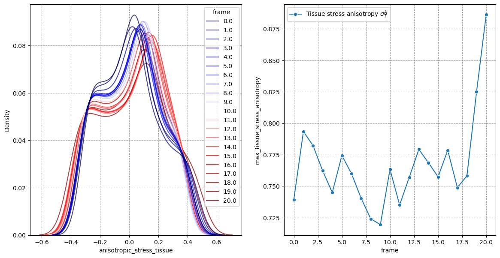
10.4. Stress along axes#
tissue_anisotropic_stress_data = results_stress_analysis[3]
tissue_tensor_elliptical = np.stack(tissue_anisotropic_stress_data[1]['metadata']['Tissue_stress_tensor_elliptical'])
tissue_tensor_cartesian = np.stack(tissue_anisotropic_stress_data[1]['metadata']['Tissue_stress_tensor_cartesian'])
df_over_time['stress_along_e1'] = tissue_tensor_elliptical[:, 0, 0]
df_over_time['stress_along_e2'] = tissue_tensor_elliptical[:, 1, 1]
df_over_time['stress_along_e3'] = tissue_tensor_elliptical[:, 2, 2]
df_over_time['stress_anisotropy_e13'] = df_over_time['stress_along_e1'] - df_over_time['stress_along_e3']
df_over_time['stress_anisotropy_e12'] = df_over_time['stress_along_e1'] - df_over_time['stress_along_e2']
df_over_time['stress_anisotropy_e23'] = df_over_time['stress_along_e2'] - df_over_time['stress_along_e3']
angles = np.zeros((n_frames, 3))
for i in range(n_frames):
_tissue_tensor_elliptical = tissue_tensor_elliptical[i]
_tissue_tensor_cartesian = tissue_tensor_cartesian[i]
for j in range(3):
dot_product = np.dot(_tissue_tensor_cartesian[:, j], _tissue_tensor_elliptical[:, 0])
norm = np.linalg.norm(_tissue_tensor_cartesian[:, j]) * np.linalg.norm(_tissue_tensor_elliptical[:, 0])
angles[i, j] = np.arccos(dot_product/norm)*180/np.pi
df_over_time['angle_x1_e1'] = angles[:, 0]
df_over_time['angle_x2_e1'] = angles[:, 1]
df_over_time['angle_x3_e1'] = angles[:, 2]
fig, axes = plt.subplots(ncols=2, figsize=(10,5))
sns.lineplot(data=df_over_time, x='frame', y = 'stress_anisotropy_e13', label='Tissue stress $\sigma^A_{TT}(\\vec{e}_1, \\vec{e}_3)$', marker='o', ax=axes[0])
sns.lineplot(data=df_over_time, x='frame', y = 'stress_anisotropy_e12', label='Tissue stress $\sigma^A_{TT}(\\vec{e}_1, \\vec{e}_2)$', marker='o', ax=axes[0])
sns.lineplot(data=df_over_time, x='frame', y = 'stress_anisotropy_e23', label='Tissue stress $\sigma^A_{TT}(\\vec{e}_2, \\vec{e}_3)$', marker='o', ax=axes[0])
sns.lineplot(data=df_over_time, x='frame', y = 'angle_x1_e1', label='$\\theta (\\vec{e}_1, \\vec{x}_1)$', marker='o', ax=axes[1])
sns.lineplot(data=df_over_time, x='frame', y = 'angle_x2_e1', label='$\\theta (\\vec{e}_1, \\vec{x}_2)$', marker='o', ax=axes[1])
sns.lineplot(data=df_over_time, x='frame', y = 'angle_x3_e1', label='$\\theta (\\vec{e}_1, \\vec{x}_3)$', marker='o', ax=axes[1])
<AxesSubplot: xlabel='frame', ylabel='angle_x1_e1'>
10.5. Geodesics#
extrema_cell_stress_data = results_stress_analysis[6]
metadata = extrema_cell_stress_data[1]['metadata']
frames = np.concatenate([[i] * len(metadata['min_max_pair_distances'][i]) for i in range(n_frames)])
min_max_pair_distances = np.concatenate(extrema_cell_stress_data[1]['metadata']['min_max_pair_distances'])
min_max_pair_anisotropies = np.concatenate(extrema_cell_stress_data[1]['metadata']['min_max_pair_anisotropies'])
df_all_pairs = pd.DataFrame(np.stack([frames.astype(int), min_max_pair_distances, min_max_pair_anisotropies]).T,
columns = ['frame', 'min_max_pair_distances', 'min_max_pair_anisotropies'])
frames = np.concatenate([[i] * len(metadata['nearest_min_max_dists'][i]) for i in range(n_frames)])
nearest_min_max_distances = np.concatenate(extrema_cell_stress_data[1]['metadata']['nearest_min_max_dists'])
nearest_min_max_anisotropies = np.concatenate(extrema_cell_stress_data[1]['metadata']['nearest_min_max_anisotropies'])
df_nearest_extrema_pairs = pd.DataFrame(np.stack([frames.astype(int), nearest_min_max_distances, nearest_min_max_anisotropies]).T,
columns = ['frame', 'nearest_min_max_dists', 'nearest_min_max_anisotropies'])
df_nearest_extrema_pairs = df_nearest_extrema_pairs[df_nearest_extrema_pairs['nearest_min_max_dists'] != 0]
fig, axes = plt.subplots(ncols=4, figsize=(20,5))
sns.kdeplot(data=df_all_pairs, x='min_max_pair_distances', hue='frame', ax=axes[0], palette=colormap, alpha=0.7, legend=False)
sns.kdeplot(data=df_all_pairs, x='min_max_pair_anisotropies', hue='frame', ax=axes[1], palette=colormap, alpha=0.7, legend=False)
sns.kdeplot(data=df_nearest_extrema_pairs, x='nearest_min_max_dists', hue='frame', ax=axes[2], palette=colormap, alpha=0.7, legend=False)
sns.kdeplot(data=df_nearest_extrema_pairs, x='nearest_min_max_anisotropies', hue='frame', ax=axes[3], palette=colormap, alpha=0.7)
fig.tight_layout()
leg = axes[-1].get_legend()
leg.set_bbox_to_anchor(bbox=(1, 1.1))
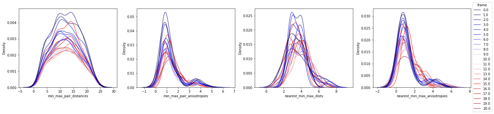
10.6. Autocorrelations: Spatial#
autocorrelations_data = results_stress_analysis[11]
metadata = autocorrelations_data[1]['metadata']
distances = [metadata['autocorrelations_total'][t]['auto_correlations_distances'] for t in range(n_frames)]
normalized_autocorrelation_total = [metadata['autocorrelations_total'][t]['auto_correlations_averaged_normalized'] for t in range(n_frames)]
frames = [[t] * len(metadata['autocorrelations_total'][t]['auto_correlations_averaged_normalized']) for t in range(n_frames)]
df_autocorrelations_total = pd.DataFrame(np.stack([np.concatenate(frames).squeeze(),
np.concatenate(distances).squeeze(),
np.concatenate(normalized_autocorrelation_total).squeeze(),
]).T, columns=['frame', 'distances', 'autocorrelation_total'])
distances = [metadata['autocorrelations_cell'][t]['auto_correlations_distances'] for t in range(n_frames)]
normalized_autocorrelation_cell = [metadata['autocorrelations_cell'][t]['auto_correlations_averaged_normalized'] for t in range(n_frames)]
frames = [[t] * len(metadata['autocorrelations_cell'][t]['auto_correlations_averaged_normalized']) for t in range(n_frames)]
df_autocorrelations_cell = pd.DataFrame(np.stack([np.concatenate(frames).squeeze(),
np.concatenate(distances).squeeze(),
np.concatenate(normalized_autocorrelation_cell).squeeze(),
]).T, columns=['frame', 'distances', 'autocorrelation_cell'])
distances = [metadata['autocorrelations_tissue'][t]['auto_correlations_distances'] for t in range(n_frames)]
normalized_autocorrelation_tissue = [metadata['autocorrelations_tissue'][t]['auto_correlations_averaged_normalized'] for t in range(n_frames)]
frames = [[t] * len(metadata['autocorrelations_tissue'][t]['auto_correlations_averaged_normalized']) for t in range(n_frames)]
df_autocorrelations_tissue = pd.DataFrame(np.stack([np.concatenate(frames).squeeze(),
np.concatenate(distances).squeeze(),
np.concatenate(normalized_autocorrelation_tissue).squeeze()
]).T, columns=['frame', 'distances', 'normalized_autocorrelation_tissue'])
mpl.style.use('dark_background')
fig, axes = plt.subplots(ncols=3, figsize=(15,5))
sns.lineplot(data=df_autocorrelations_total, x='distances', y='autocorrelation_total', hue='frame', palette=colormap, ax=axes[0], legend=False)
sns.lineplot(data=df_autocorrelations_cell, x='distances', y='autocorrelation_cell', hue='frame', palette=colormap, ax=axes[1], legend=False)
sns.lineplot(data=df_autocorrelations_tissue, x='distances', y='normalized_autocorrelation_tissue', hue='frame', palette=colormap, ax=axes[2])
leg = axes[-1].get_legend()
leg.set_bbox_to_anchor(bbox=(1, 0.9))
for ax in axes:
ax.set_xlabel('Geodesic distances, s ($\mu m$)')
ax.set_ylabel('Spatial autocorrelation')
ax.grid(which='major', linestyle='--', alpha=0.5, color='gray')
fig.tight_layout()
fig.savefig(r'C:\Users\johamuel\ownCloud\Documents\Reisen\2211_crick_symposium\flash_talk\imgs\autocorrelation.png')
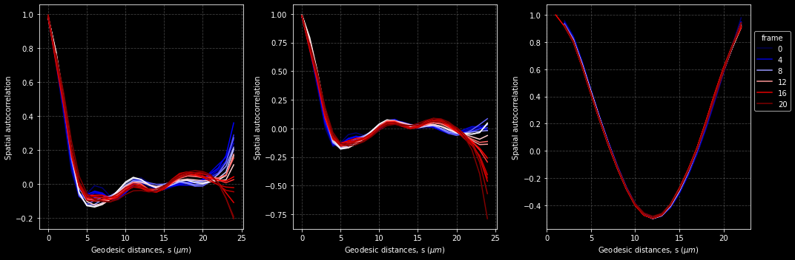
10.7. Autocorrelations: Temporal#
surface_total_stress_radial = list(results_stress_analysis[11][0])
surface_total_stress_radial += [df_total_stress['anisotropic_stress_total_radial'].to_numpy()]
df_over_time['autocorrelation_stress_total'] = measurements.temporal_autocorrelation(df_total_stress, 'anisotropic_stress_total_radial')
df_over_time['autocorrelation_stress_cell'] = measurements.temporal_autocorrelation(df_total_stress, 'anisotropic_stress_cell')
df_over_time['autocorrelation_stress_tissue'] = measurements.temporal_autocorrelation(df_tissue_stress, 'anisotropic_stress_tissue')
fig, axes = plt.subplots(ncols=3, figsize=(15,5))
sns.lineplot(data=df_over_time, x='frame', y='autocorrelation_stress_total', marker='o', ax=axes[0])
sns.lineplot(data=df_over_time, x='frame', y='autocorrelation_stress_cell', marker='o', ax=axes[1])
sns.lineplot(data=df_over_time, x='frame', y='autocorrelation_stress_tissue', marker='o', ax=axes[2])
fig.tight_layout()
for ax in axes:
ax.set_ylim(-0.1, 1.1)
ax.grid(which='major', color='gray', linestyle='--', alpha=0.7)
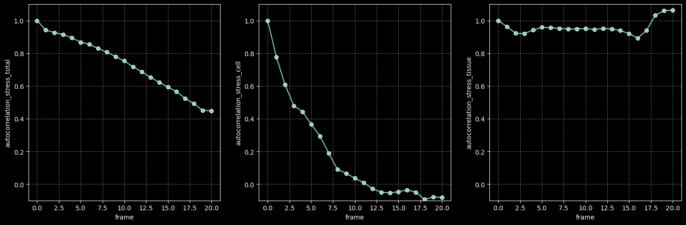
10.8. Ellipsoid deviation#
ellipsoid_deviation_data = results_stress_analysis[0]
metadata = ellipsoid_deviation_data[1]['metadata']
fig, axes = plt.subplots(ncols=4, nrows = n_frames//4 + 1, figsize=(12, n_frames))
for t, ax in enumerate(axes.flatten()):
ax.imshow(np.triu(metadata['Elipsoid_deviation_contribution_matrix'][0]), cmap='inferno')
ax.tick_params(labelbottom=False, labeltop=True, labelleft=False, labelright=True)
ax.set_xlabel('Degree')
ax.set_ylabel('Order')
ax.set_title(f'Time-step: {t}')
fig.tight_layout()
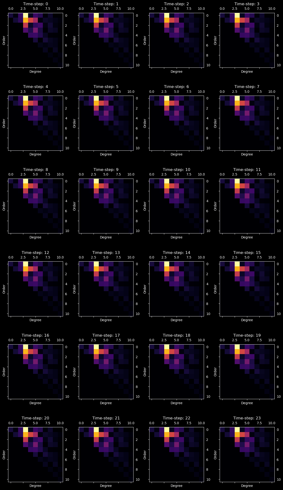